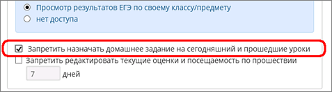

Администратор системы может запретить учителям назначать домашнее задание на сегодняшний и прошедшие уроки.
Внимание! Эта настройка по умолчанию не выставлена. То есть по умолчанию назначать "задним числом" домашние задания можно.
Запрет назначать ДЗ на сегодняшний и прошедший уроки позволяет настройка в Правах доступа для типа пользователя "Учитель" в подразделе "Классный журнал":

Если для роли "Учитель" выставлено это право доступа, - учитель может назначать ДЗ только на будущие дни, что предотвращает ситуацию редактирования ДЗ задним числом. Такое ограничение может быть критично для учащихся и родителей, которые должны получать из системы оперативную, объективную информацию.
Замечание: редактировать или удалять уже имеющиеся ДЗ за любые даты можно всегда. Запрет касается только добавления нового ДЗ.